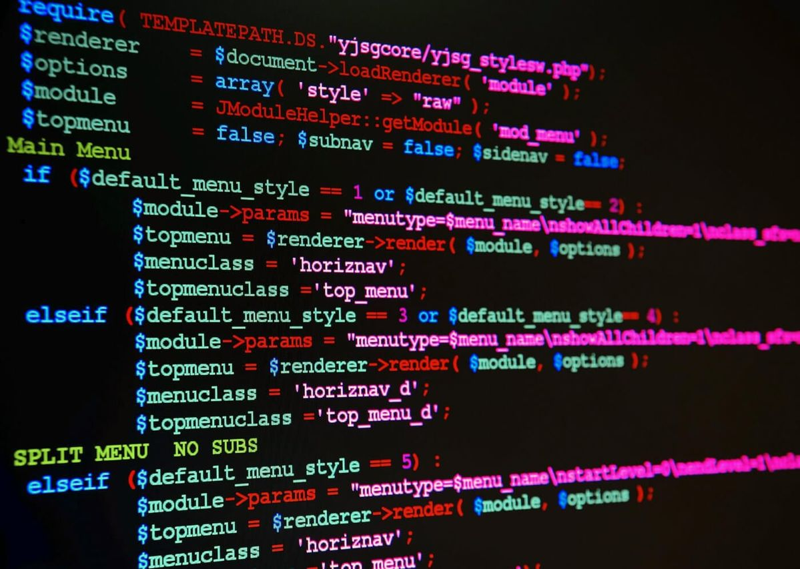
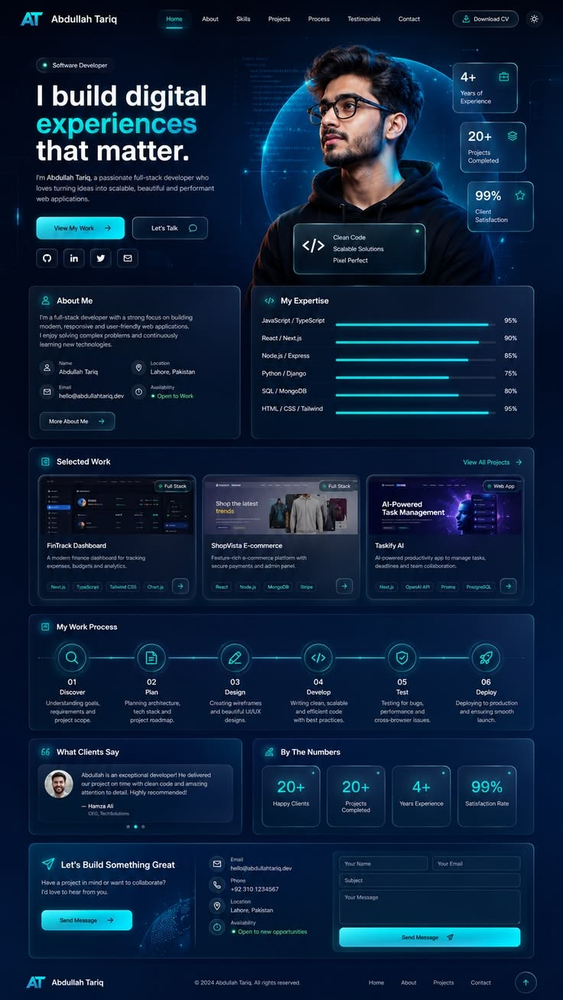
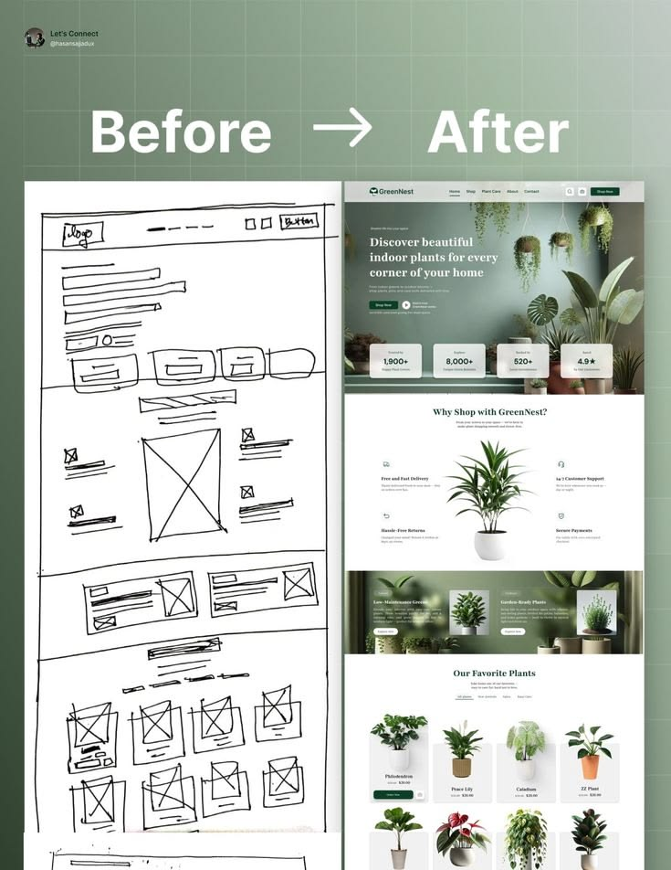
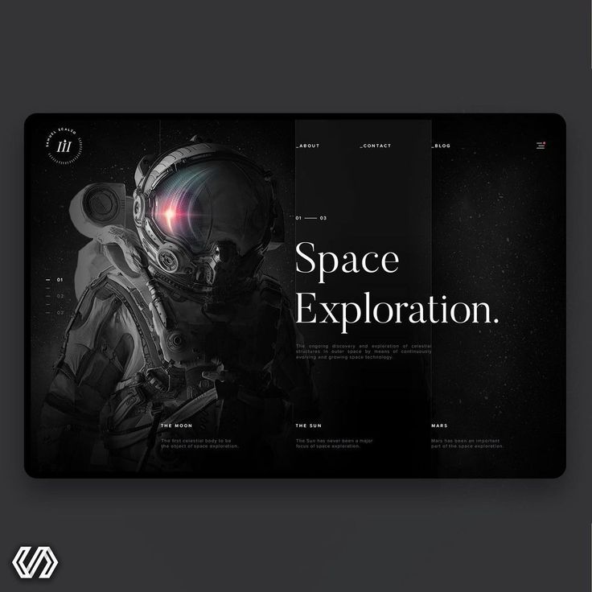

Rendimiento
Carga rápida gracias a imágenes optimizadas, código liviano y uso de caché.

Web Development Process
Un sitio web profesional no se improvisa. Se construye siguiendo cinco etapas ordenadas, desde la idea inicial hasta su publicación, para lograr un producto claro, rápido, seguro y fácil de usar.
Introducción
Un sitio profesional responde a objetivos claros: atraer a un público, comunicar un mensaje o ofrecer un servicio. Para lograrlo, el trabajo se divide en etapas y cada una se revisa antes de avanzar a la siguiente.
En este proceso participan perfiles distintos: quien analiza las necesidades, quien diseña la experiencia, quien programa, quien prueba y quien publica y mantiene el sitio. Trabajar así reduce errores, ahorra tiempo y mejora el resultado final.
Hoy, además, se trabaja de forma iterativa: se publica una primera versión y se mejora de manera continua con los comentarios de los usuarios.

Las cinco etapas
Se define qué problema resolverá el sitio, para quién y con qué recursos. Es la base de todo el proyecto: un buen plan evita rehacer el trabajo más adelante.
Resultado: documento de requisitos y cronograma.
Se transforma el plan en una propuesta visual y de navegación. Se cuida la experiencia de usuario (UX) y la interfaz (UI) para que el sitio sea claro y atractivo.
Resultado: wireframes y prototipo navegable.
Se programa el sitio. El frontend construye lo que ve el usuario con HTML, CSS y JavaScript; el backend gestiona la lógica, los servidores y la base de datos.
Resultado: sitio funcional en entorno de desarrollo.
Antes de publicar se verifica que todo funcione como se espera. Se buscan errores, se mide la velocidad y se comprueba la seguridad en distintos navegadores y dispositivos.
Resultado: informe de pruebas y errores corregidos.
El sitio se sube a un servidor y queda disponible en internet con su dominio y su certificado de seguridad. Después se monitorea y se mantiene actualizado.
Resultado: sitio en línea y plan de mantenimiento.

Herramientas
Cada fase del proceso cuenta con herramientas especializadas que ayudan a trabajar de forma organizada y en equipo.
Trello, Notion, Jira y hojas de cálculo.
Figma, Adobe XD y herramientas de prototipado.
VS Code, Git y GitHub, Node.js y frameworks como React.
Lighthouse, Jest, Cypress y DevTools del navegador.
Netlify, Vercel, servicios en la nube y paneles de hosting.
Calidad profesional
Carga rápida gracias a imágenes optimizadas, código liviano y uso de caché.
HTTPS, validación de datos y protección de contraseñas frente a ataques comunes.
Buen contraste, textos alternativos y navegación por teclado para todas las personas.
Estructura clara y contenido relevante para que los buscadores encuentren el sitio.

Proceso completo
Conclusión
Publicar el sitio no es el final, sino el inicio de una mejora constante. Con el apoyo de la inteligencia artificial, la automatización y la nube, cada etapa será más ágil, pero seguirá siendo esencial planificar, diseñar, programar, probar y publicar con criterio profesional.
